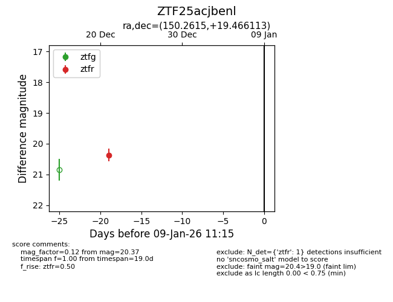
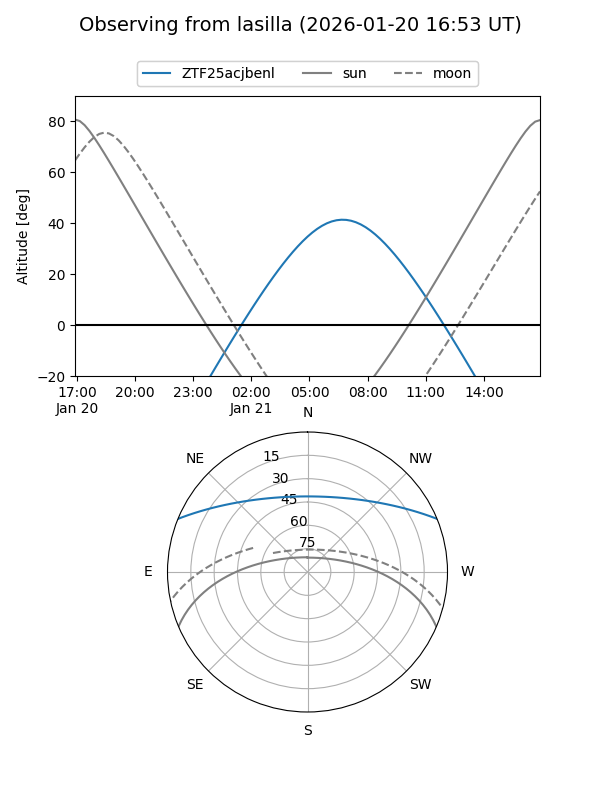
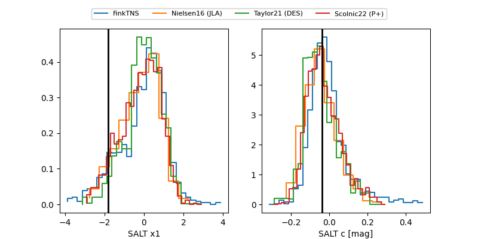

ZTF25acjbenl
Target ZTF25acjbenl at 2025-12-31 18:00
Aliases and brokers:
FINK: link
Lasair: link
ALeRCE: link
alt names
ZTF25acjbenl (ztf,fink_ztf)
Coordinates:
equatorial (ra, dec) = 150.2615,+19.46611
equatorial (HMS+DMS) = 10:01:02.75,+19:27:58.01
galactic (l, b) = (214.7166,+50.32212)
Flags:
Photometry:
last ztfr=20.37
1 ztfr detections
Lightcurve

Visibility


Additional plots
